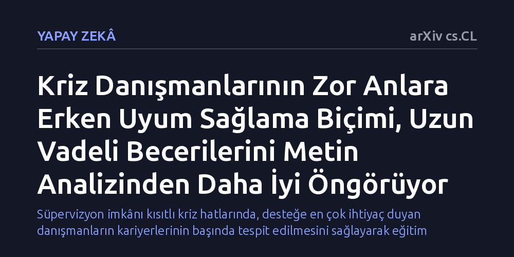

YAPAY-ZEKA · arXiv cs.CL · 2026-09-08
Gönüllü kriz danışmanlarının uzun vadede konuşma becerilerini geliştirip geliştiremeyeceğinin erken dönemde tahmin edilebilirliği araştırıldı. Danışmanların zorlandıkları anlara zamanla nasıl uyum sağladığını izleyen modelin, gelecekteki gelişimi doğrudan konuşma metinlerini inceleyen temel yöntemlerden daha isabetli öngördüğü belirlendi.
Süpervizyon imkânı kısıtlı kriz hatlarında, desteğe en çok ihtiyaç duyan danışmanların kariyerlerinin başında tespit edilmesini sağlayarak eğitim kaynaklarının doğru kişilere yönlendirilmesinin önünü açar.

Ruh sağlığı kriz hatlarında görev alan gönüllü danışmanlar, intihar eğilimi veya ağır duygusal çöküntü yaşayan bireylerle en kritik anlarda temas kurar. Bu görüşmelerde doğru dili kullanmak ve diyaloğu olumlu bir sonuca yönlendirebilmek hayati bir iletişim becerisi gerektirir. Ancak kriz merkezlerindeki danışmanların büyük bölümü gönüllülerden oluşur ve bu kişilerin kıdemli uzmanlardan düzenli süpervizyon ya da yapılandırılmış geri bildirim alma olanakları oldukça sınırlıdır.
Bu kısıt, kriz merkezleri için pratik bir yönetim sorunu doğurur: Sınırlı denetim ve destek kaynakları hangi danışmanlara öncelikli olarak yönlendirilmelidir? Hangi danışmanların deneyim kazandıkça kendi kendine gelişeceğini, hangilerinin ise yerinde sayacağını kariyerlerinin başında kestirebilmek, kriz destek hizmetlerinin kalitesini artırmak açısından kritik bir önem taşır.
Araştırmacılar, danışmanların gelecekteki gelişimini tahmin etmek için alışılmış yaklaşımlardan farklı bir çerçeve kurdu. Standart yapay zekâ yöntemleri çoğunlukla görüşmelerin tüm metin dökümünü bir bütün olarak inceler ve genel kelime kalıplarından çıkarım yapmaya çalışır. Oysa bu çalışmanın temel sezgisi, insanların konuşmanın genelinde değil, özellikle belirli zorlayıcı anlarda (örneğin diyaloğun tıkandığı veya danışanın direnç gösterdiği dönemeçlerde) bocaladığı gerçeğine dayanıyor.
Geliştirilen yöntem ilk olarak bir danışmanın başlangıçta en çok hangi tür anlarda zorlandığını tespit ediyor. Ardından, danışmanın sonraki görüşmelerde benzer kriz anlarıyla tekrar karşılaştığında yanıtlarını nasıl uyarladığını ve bu zorluklara zaman içinde nasıl tepki verdiğini modelliyor. Böylece sistem, genel üsluptan ziyade danışmanın zorluklardan ders çıkarma dinamiklerini izliyor.
Geliştirilen tahmin modeli, bir danışmanın kariyerinin ilk evrelerindeki uyum davranışlarına bakarak aylar hatta yıllar sonra görüşmeleri olumlu sonuca ulaştırma becerisini geliştirip geliştiremeyeceğini öngörmeyi başardı. Araştırma, bir danışmanın zor anları yönetmeyi zaman içinde nasıl öğrendiğini izlemenin, gelecekteki mesleki gelişimini tahmin etmede en açıklayıcı işaret olduğunu ortaya koydu.
Karşılaştırmalı testlerde bu yaklaşım, doğrudan görüşme metinlerinin dökümünden öğrenen standart temel modellerden belirgin şekilde daha iyi sonuç verdi. İnsan iletişimindeki uzun vadeli gelişimi yalnızca mevcut konuşma metinlerine bakarak kestirmek zor bir problem olsa da, adaptasyon sürecini modele dahil etmek tahmin doğruluğunu somut biçimde artırdı.
Bu bulgular, kriz danışmanlığında ve iletişim odaklı görevlerde çalışanların eğitim süreçlerine dair önemli bir bakış açısı sunuyor. Bir danışmanın kariyerine başlarken hata yapması veya bazı anlarda zorlanması gelecekte başarısız olacağı anlamına gelmiyor; asıl belirleyici faktör, benzer zorluklarla yeniden karşılaştığında yaklaşımını ne kadar esnetebildiği ve dönüştürebildiği oluyor.
Böyle bir hesaplamalı modelleme, kriz merkezlerinde hangi danışmanların yerinde sayma riski taşıdığını erken evrede saptamak için kullanılabilir. Bu sayede merkez yöneticileri, kısıtlı süpervizyon kapasitelerini rastgele dağıtmak yerine, gerçekten ek desteğe ihtiyaç duyan kişilere tam zamanında yönlendirebilir.